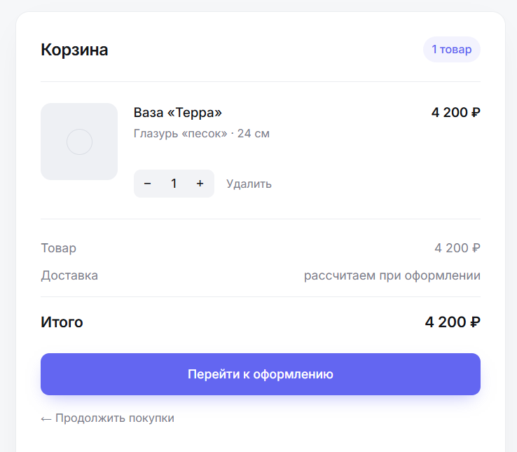
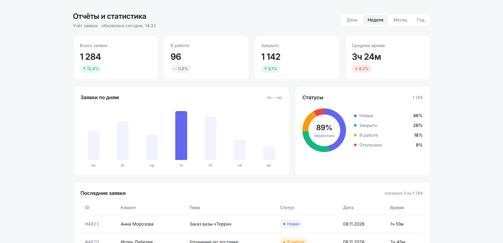
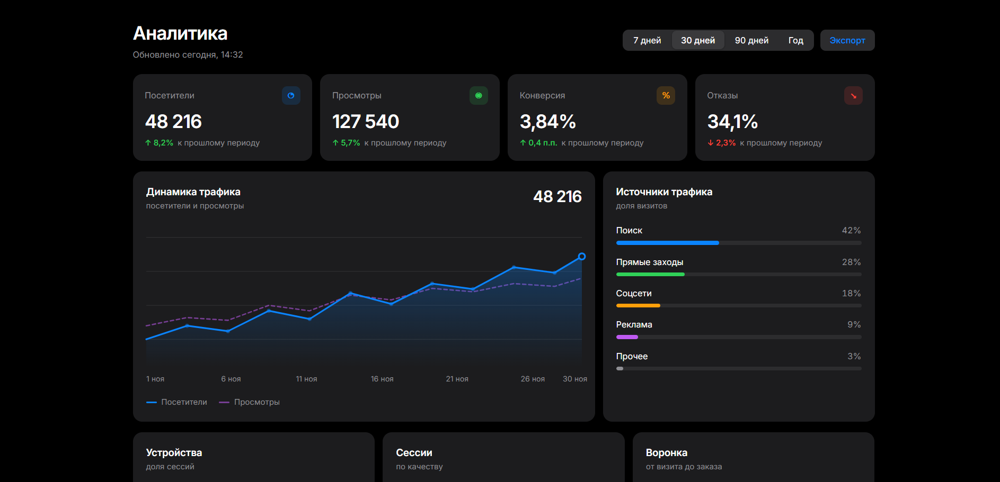
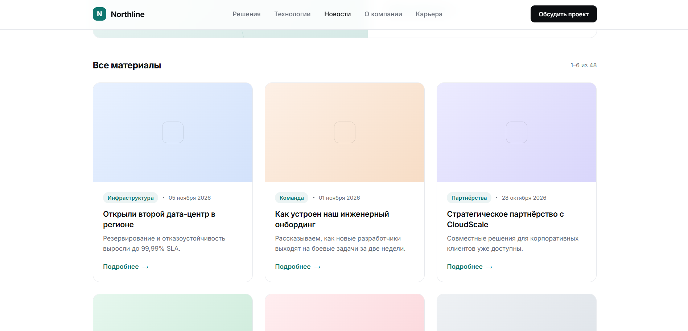
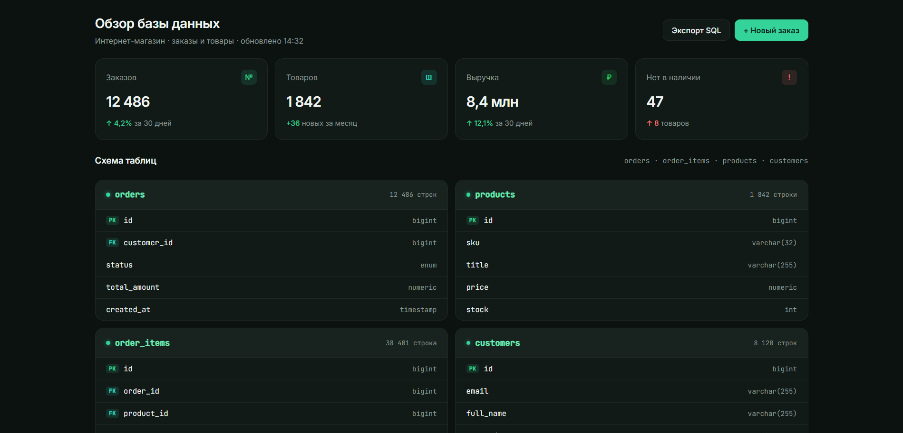
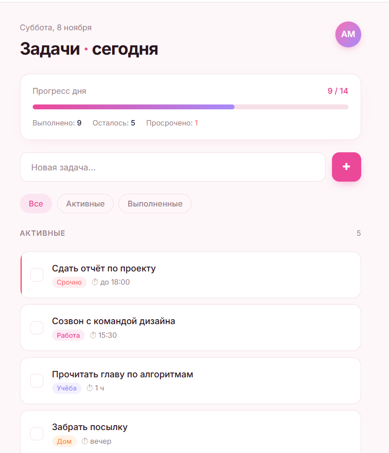

от 8 000 ₽за проект
- лендинг, сайт или база данных
- исходники и инструкция запуска
- 1–2 бесплатные правки
- срок — от 2 недель
если документацию пишете сами
Обсудитьдипломы по веб-разработке
Сайт или база данных, документация по ГОСТ, защита. От 18 000 ₽, от 3 недель.
почему со мной
Согласуем план и даты сдач по разделам. Вы всегда знаете, на каком этапе проект.
Доработки по замечаниям научрука входят в стоимость — в разумных пределах.
Показываю, как всё устроено, чтобы вы могли ответить на вопросы комиссии.
Аванс и остаток после сдачи. Без предоплаты за весь объём сразу.
кейсы · примеры работ
Реальные проекты с задачей, стеком и результатом. У каждого — отдельная страница с деталями.

Адаптивный лендинг с каталогом и корзиной на JavaScript. В дипломе — вёрстка, UX и работа с DOM.

ER-диаграмма, нормализация до 3НФ, SQL-запросы и отчёты. В дипломе — обоснование схемы.

Авторизация, API на PHP и графики на JS. В дипломе — архитектура, БД и оптимизация.

Многостраничный сайт с новостями, формой и админкой на PHP. Документация по ГОСТ.

Товары, заказы, триггеры и хранимые процедуры. Оптимизация запросов и индексы.

SPA на чистом JS с авторизацией через PHP API и сохранением в MySQL.
стек
Классический стек, который легко объяснить на защите и запустить на любом хостинге.
цены
Точную смету скажу после брифа. Ниже — ориентиры, чтобы вы понимали порядок цифр.
если документацию пишете сами
Обсудитьправки по научруку включены
Обсудитьможно отдельно от проекта
Обсудитьгарантии
Дорабатываю текст и проект до соответствия требованиям кафедры.
Отвечаю на вопросы, помогаю с речью и разбором вопросов комиссии.
Передаю код, схему БД и инструкцию запуска — проект остаётся у вас.
услуги
Можно взять проект целиком или только то, что нужно.
Полный цикл: от темы до защиты.
Только работающий проект, без документации.
Когда проект уже есть, а дальше — записка и слайды.
как проходит работа
Вы всегда знаете, что происходит с проектом и когда будет следующий результат.
Обсуждаем тему, стек, сроки и требования кафедры.
Согласуем структуру, функционал, стоимость и даты.
Пишу код и главы, показываю промежуточные результаты.
Схема БД, оформление по ГОСТ, антиплагиат.
Презентация, речь, вопросы и правки по научруку.
частые вопросы
Да. Сайты, базы данных, веб-приложения, PHP, SQL и API. Также пишу пояснительные записки, презентации и готовлю к защите.
Да. Проект отдельно от документации: сделаю сайт или БД, передам исходники и инструкцию запуска. Документацию можно заказать позже.
Правки по замечаниям научрука входят в работу. Дорабатываю текст и проект до соответствия требованиям — в разумных пределах и по согласованным срокам.
Аванс перед началом работы и остаток после сдачи. Без предоплаты за весь объём сразу. Точные условия обсуждаем на брифе.
Напишите тему, специальность, стек (если есть пожелания), сроки и требования кафедры. Я задам уточняющие вопросы, предложу план и стоимость. Первая консультация бесплатная.
отзывы
Делали сайт и базу данных для диплома. Понравилось, что показывали промежуточные результаты и объясняли, как всё устроено — на защите было что сказать.
Заказывала только пояснительную записку и презентацию — проект делала сама. Всё оформили по ГОСТ, слайды получились аккуратные.
Помогли с базой данных: ER-диаграмма, нормализация, запросы. Научрук принял почти сразу, вопросы комиссии разобрали заранее.
контакты
Напишите тему, специальность, стек и сроки — отвечу в течение дня, предложу план и стоимость. Первая консультация бесплатная.
кейс 01 · сайт
Адаптивный лендинг для студии керамики: каталог, корзина на чистом JavaScript, анимация и форма заказа. В дипломе — вёрстка, UX и взаимодействие с DOM.
Сделать промо-сайт студии с каталогом и возможностью собрать заказ без перезагрузки. Сайт должен хорошо выглядеть на телефоне и быть понятным для скринридеров.
const cart = []; const cartEl = document.querySelector('#cart-list'); const totalEl = document.querySelector('#cart-total'); function addToCart(product) { cart.push(product); renderCart(); } function renderCart() { cartEl.innerHTML = cart.map(item => `<li>${item.title} — ${item.price} ₽</li>` ).join(''); const total = cart.reduce((sum, item) => sum + item.price, 0); totalEl.textContent = total + ' ₽'; localStorage.setItem('cart', JSON.stringify(cart)); }
В дипломе этот фрагмент разобран в главе о взаимодействии с DOM и хранении состояния на клиенте.
Сайт собран без фреймворков, быстро загружается и полностью адаптивен. В записке описаны структура проекта, вёрстка, работа корзины и проверка доступности. На защите разбирали DOM, localStorage и CSS Grid.
Нужен похожий проект? Обсудим задачу и сроки.
кейс 02 · база данных
Проектирование базы данных для отдела заявок. В дипломе — ER-диаграмма, нормализация до 3НФ, SQL-запросы, представления и отчёты.
Спроектировать базу данных: клиенты, сотрудники, заявки, статусы и история. Нужны отчёты по количеству и срокам обработки.
SELECT s.title AS status, COUNT(r.id) AS total, ROUND(AVG(TIMESTAMPDIFF(DAY, r.created_at, r.closed_at)), 1) AS avg_days FROM requests r JOIN statuses s ON s.id = r.status_id GROUP BY s.title ORDER BY total DESC;
В дипломе разобраны группировка, агрегатные функции и JOIN.
Схема нормализована, построены ER-диаграмма и отчёты. В записке — обоснование сущностей, связи, индексы и примеры запросов. На защите разбирали нормализацию и оптимизацию.
Нужна база данных? Обсудим тему и схему.
кейс 03 · веб-приложение
Веб-приложение с авторизацией, API на PHP и графиками на JS. В дипломе — архитектура, база данных, REST API и оптимизация запросов.
Внутренняя панель, где сотрудник после входа видит метрики и графики. Данные в MySQL, отдаются через API, рисуются на клиенте.
GET /api/metrics,
GET /api/chart?period=week, POST /api/login.
async function loadChart(period = 'week') { const res = await fetch(`/api/chart?period=${period}`, { headers: { 'Accept': 'application/json' } }); if (!res.ok) throw new Error('Ошибка загрузки'); const data = await res.json(); renderChart(data); }
В дипломе разобраны fetch, обработка ошибок и формат JSON-ответа.
Приложение работает локально и на хостинге, данные приходят через API. В записке — схема БД, эндпоинты, авторизация и оптимизация. На защите разбирали API и безопасность.
Нужно веб-приложение? Обсудим функционал.
кейс 04 · сайт
Многостраничный сайт: новости, услуги, форма обратной связи и админка на PHP. В дипломе — структура, формы, сессии и CRUD.
Сайт компании с возможностью добавлять новости через админку и получать заявки с формы.
if ($_SERVER['REQUEST_METHOD'] === 'POST') { $name = trim($_POST['name'] ?? ''); $email = trim($_POST['email'] ?? ''); $text = trim($_POST['message'] ?? ''); if ($name && filter_var($email, FILTER_VALIDATE_EMAIL) && $text) { $stmt = $pdo->prepare( 'INSERT INTO requests (name, email, message, created_at) VALUES (?, ?, ?, NOW())' ); $stmt->execute([$name, $email, $text]); $ok = 'Заявка отправлена'; } }
В дипломе разобраны валидация, подготовленные запросы и защита от SQL-инъекций.
Сайт с админкой и формой заявок на PHP и MySQL. В записке — структура, CRUD, сессии и безопасность. На защите разбирали формы и подготовленные запросы.
Нужен сайт с админкой? Обсудим задачу.
кейс 05 · база данных
База данных магазина: товары, категории, заказы, пользователи. В дипломе — схема, триггеры, хранимые процедуры и оптимизация.
Спроектировать БД магазина с товарами, категориями, заказами и пользователями. Добавить триггеры и процедуру для отчёта по продажам.
DELIMITER // CREATE TRIGGER after_order_item AFTER INSERT ON order_items FOR EACH ROW BEGIN UPDATE orders SET total = ( SELECT SUM(price * quantity) FROM order_items WHERE order_id = NEW.order_id ) WHERE id = NEW.order_id; END// DELIMITER ;
В дипломе разобраны триггеры, переменные NEW и пересчёт агрегатов.
Схема нормализована, триггеры и процедуры работают, отчёты строятся быстро. В записке — схема, триггеры, процедуры и индексы. На защите разбирали триггеры и оптимизацию.
Нужна БД магазина? Обсудим схему.
кейс 06 · веб-приложение
SPA на чистом JavaScript с авторизацией через PHP API и сохранением в MySQL. В дипломе — SPA, fetch, REST API и сессии.
Приложение для задач: вход, список, добавление, редактирование и удаление без перезагрузки.
GET/POST /api/tasks,
PUT/DELETE /api/tasks/{id}.
async function createTask(title) { const res = await fetch('/api/tasks', { method: 'POST', headers: { 'Content-Type': 'application/json' }, body: JSON.stringify({ title }) }); const task = await res.json(); tasks.push(task); renderTasks(); } async function deleteTask(id) { await fetch(`/api/tasks/${id}`, { method: 'DELETE' }); tasks = tasks.filter(t => t.id !== id); renderTasks(); }
В дипломе разобраны fetch, методы HTTP, JSON и обновление DOM.
SPA работает без перезагрузки, данные сохраняются в MySQL через PHP API. В записке — архитектура, API, сессии и безопасность. На защите разбирали REST и fetch.
Нужно SPA? Обсудим функционал.